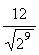

Un jeune savant, M. Lissajous, dans une note lue à la Société d'Encouragement pour l'industrie nationale, à propos de l'Exposition Universelle de 1855, fait remarquer l'élévation progressive du diapason des orchestres depuis Louis XIV jusqu'à nos jours, et insiste sur la nécessité d'adopter un diapason normal et universel.
Le mémoire de M. Lissajous a éveillé l'attention du monde savant et artistique Les journaux ont parlé de cette intéressante question, et enfin le Ministre d'État s'en est préoccupé, Une commission de savants et d'artistes a été nommée à cet effet par le Ministre pour aviser aux moyens de fixer d'une manière officielle le ton normal sur lequel on devra, à l'avenir, accorder tous les instruments.
On attend avec impatience le résultat des travaux de cette commission, et on espère, à l'exemple de ce qui a été fait antérieurement pour notre nouveau système de poids et mesures, accueilli avec faveur par beaucoup de nations étrangères, que le la de France deviendra le mètre sonore universel.
Un savant critique, M. Berlioz, dans son feuilleton du Journal des Débats du 24 septembre dernier, émet sur cette question des observations très judicieuses Il examine d'abord si le diapason a réellement monté depuis cent ans, et il constate une élévation progressive et générale dans tous les pays. Toutefois, il fait remarquer que, malgré de légères divergences, le diapason actuel des instruments est assez peu différent partout pour qu'à l'occasion de grandes solennités musicales dont il a été le promoteur, il ait pu réunir plusieurs orchestres qui s'accordaient facilement au même ton
M. Berlioz fait aussi observer que les orgues de nos anciennes basiliques dont plusieurs datent de plus d'un siècle se trouvent aujourd'hui un ton plus bas que le ton actuel des instruments d'orchestre. Il résulte de ce fait, suivant M. Berlioz, que depuis un siècle environ, le diapason se serait élevé d'un ton, soit d'un demi-ton par demi- siècle, et qu'en continuant cette progression ascendante on arriverait ainsi à parcourir tous les degrés de l'échelle chromatique. Cette circonstance justifie suffisamment à ses yeux la mesure prise par M. le Ministre d'État pour fixer désormais un diapason officiel. Tout le monde est d'accord sur ce point, et nous partageons entièrement la manière de voir de M. Berlioz.
Ce savant critique examine ensuite les mauvais effets produits par l'exhaussement du diapason ; il fait remarquer avec beaucoup de justesse que l'élévation du diapason n'est pas la seule cause de ruine de la voix des chanteurs, mais que les compositeurs eux-mêmes, en écrivant plus haut pour les voix que les anciens auteurs, semblent avoir pris à tâche, non seulement de suivre, mais d'outrepasser cette progression ascendante qui détruit en peu d'années tant de belles voix. Le mal proviendrait donc, d'après lui, plutôt des compositeurs que des instruments ; car, quelle que soit la hauteur du diapason, il est facile aux compositeurs de ne pas dépasser les limites raisonnables de l'étendue des voix.
Parmi les causes qui ont amené l'exhaussement du diapason, M. Berlioz pense que les facteurs d'instruments à vent sont les plus coupables. Suivant lui, afin de donner plus d'éclat aux flûtes, aux clarinettes, et aux hautbois, ces facteurs en auraient clandestinement haussé le ton. Nous ne partageons pas cette opinion. Nous ne voyons pas quel intérêt pourraient avoir les facteurs à couper quelques millimètres dans la longueur des tubes sonores. Loin de gagner quelque chose, la sonorité de l'instrument ne pourrait que perdre dans sa qualité et dans sa justesse. Il n'y a donc dans ce fait qu'une obéissance passive des facteurs pour les instrumentistes ; car ni l'intérêt artistique ni leur intérêt commercial n'ont pu provoquer cette altération des instruments.
Aujourd'hui, les facteurs d'orgues eux-mêmes, ajoute M. Berlioz, suivent le mouvement et accordent leurs instruments au diapason haut ; cette tendance lui parait déplorable à cause du plain-chant qui doit être chanté dans son ancienne tonalité. « Les orgues, dit-il, devraient ou transposer quand elles accompagnent le plain-chant, si elles sont au diapason moderne, ou être fixées au ton des plus anciennes ; seulement elles devraient l'être dans des rapports exacts avec le ton moderne qui n'empêcherait pas de leur adjoindre, en transposant, les instruments d'orchestre.
« Malheureusement, quelques facteurs prennent le pire de tous les moyens termes. Ils construisent des orgues un quart de ton au-dessous du diapason des théâtres. J'en ai fait, il y a quelques années, la cruelle expérience dans l'église Saint-Eustache, où, pour l'exécution d'un Te Deum, il fut impossible, malgré l'allongement de tous les tubes sonores de l'orchestre, de mettre la masse instrumentale d'accord avec le nouvel orgue achevé depuis trois ans. »
Nous sommes parfaitement d'avis que l'orgue doit être accordé, sinon au ton normal des autres instruments, du moins dans des rapports exacts d'intonation, soit d'un ton ou d'un demi-ton juste ; mais jamais d'un quart de ton, ce qui rendrait toute transposition impossible, comme le fait remarquer M. Berlioz.
Cet éminent artiste examine ensuite s'il faut baisser le diapason. Malgré quelques avantages qu'il signale, il y reconnaît de graves inconvénients, et il conclut qu'il faut seulement fixer le diapason actuel. Il pense que c'est le parti le plus sage et propose d'adopter le la de l'Opéra de Paris, comme le son type, l'étalon sonore officiel, ce la étant de huit cent quatre-vingt-dix-huit vibrations par seconde.
Quant aux moyens qu'il propose pour la conservation du la officiel, ils nous paraissent inefficaces. Rien n'est plus variable, suivant nous, que la tonalité d'un tuyau d'orgue par les changements de température ; mais ici n'est pas la question principale.
Nous avons cru devoir exposer d'abord les idées de M. Berlioz, dont le nom fait autorité dans cette matière, avant d'émettre nos observations personnelles sur une question qui intéresse, non seulement le monde savant et artistique, mais aussi le monde religieux. Nous ne sommes pas de ceux qui veulent bannir l'orchestre de l'église ; car c'est dans l'église que tous les arts ont puisé leurs plus belles inspirations ; il faut donc éviter avec soin que l'orgue, surnommé, à juste titre, le roi des instruments, qui a été adopté par l'église comme le principal auxiliaire de ses chants, ne soit en discordance avec les autres instruments, et que ce qui est arrivé à M. Berlioz, à Saint-Eustache ne puisse se reproduire ailleurs.
Ce n'est pas seulement de nos jours que l'on s'est préoccupé de la détermination du ton fixe sur lequel on devrait accorder les instruments ; Sauveur, savant géomètre du XVIIe siècle, parait avoir été le premier à étudier cette question, dès l'année 1700. Il avait remarqué que l'ut d'un tuyau d'orgue de 8 pieds donnait 61 vibrations sonores, soit 122 vibrations simples par seconde, comme il le fait observer de nouveau treize ans après, dans ses recherches sur les cordes vibrantes, qui le conduisirent au même résultat.
Le célèbre Euler, en 1739, attribue au même ut 118 vibrations simples par seconde. Plus tard, ce même savant trouve, pour le même ut, 125 vibrations par seconde.
Vers la même époque, en 1752, Marpurg, à Berlin, trouvait ce même dernier nombre de 125 vibrations pour l'ut de 8 pieds.
En 1796, Sarti a remarqué que le la de la 3e corde du violon faisait, à Pétersbourg, 436 vibrations sonores, ou 872 vibrations simples par seconde, ce qui donne au même ut de 8 pieds 131 vibrations par seconde.
Indépendamment des recherches des savants que nous venons de citer et qui permettent de reconnaître l'état d'élévation du ton par la comparaison des nombres de vibrations, nous possédons encore, dans nos vieilles basiliques, quelques anciennes orgues échappées au vandalisme révolutionnaire, qui ont apporté jusqu'à nous le ton ou le diapason du commencement du XVIIIe siècle, lequel ton concorde avec les expériences de Sauveur et d'Euler, que nous avons déjà citées. Le ton de ces anciennes orgues se trouve, en effet, un ton au-dessous du diapason actuel. Il est probable que les orgues établies dans les XVe, XVIe et XVIIe siècles, étaient accordées au ton des orgues du XVIIIe siècle ; car, à cette époque, il n'existait aucun prototype exact et l'on accordait toujours les nouvelles orgues sur les anciennes. L'illustre auteur de l'Art du facteur d'orgues, dom Bedos, n'indique pas d'autre moyen dans son excellent traité ; de son temps, soit que le diapason d'acier ne fût pas connu, ou que son usage ne se fût pas vulgarisé en France, notre savant Bénédictin, après avoir décrit la forme et la construction du tuyau de ton, espèce de flageolet muni d'un piston analogue à celui de la flûte de saule, conseille simplement de marquer le long du piston les tons que l'on prendra sur un orgue parfaitement d'accord et bien au ton. Quelle est l'intonation précise de ce diapason ? Dom Bedos ne le dit pas, et le dessin de l'instrument ne permet pas de la déterminer.
En parlant de la partition pour l'accord de l'orgue, ce même auteur ajoute : « Mais avant d'aller plus loin, il faut avertir qu'il est important de mettre l'orgue bien au ton. Il y a le ton de chapelle et le ton d'opéra ; celui-ci n'est pas un ton fixe, on le hausse ou on le baisse d'un quart de ton ou même plus, suivant la portée des voix. Le ton de chapelle est fixe en France, c'est le plus à la portée des voix et des instruments de musique. Il faut donc monter le tuyau de ton sur celui-là, ou l'ajuster sur un orgue qu'on saura être parfaitement au ton de chapelle. » D'après cette citation de dom Bedos, on doit conclure que l'orgue, de son temps, se trouvait d'accord avec les autres instruments de musique.
J.-J. Rousseau, qui vivait à la même époque que dom Bedos, dit aussi dans son Dictionnaire de musique au mot TON : « Dans les églises, il y a le ton du choeur pour le plain-chant. Il y a pour la musique le ton de chapelle et le ton d'opéra. Ce dernier n'a rien de fixe ; mais en France, il est ordinairement plus bas que l'autre. »
D'après ces derniers auteurs, l'ancien ton de chapelle était le moins invariable et le plus à la portée des voix et des instruments. Le ton d'opéra était, suivant Rousseau, plus bas que le ton de chapelle. Il est du moins certain qu'à leur époque l'orgue et les instruments se trouvaient montés sur le même ton.
Le célèbre acousticien Chladni fait remarquer dans son traité d'acoustique, publié en 1809, que depuis le temps d'Euler et de Marpurg, on a monté toujours un peu en tendant les instruments, et à présent, dit-il, dans plusieurs orchestres on a déjà surpassé le ton proposé par lui et adopté depuis par les physiciens ; ce ton prend sa base dans la série des puissances de 2, et donne à l'ut, le plus grave des sons perceptibles, 32 vibrations par seconde, ce qui porte l'ut de 8 pieds précédemment cité à 128 vibrations par seconde1.
Les expériences de M. de Prony, publiées en 1832 sur la détermination du nombre de vibrations du même ton ut accordé au diapason d'orchestre, ont donné pour résultat 132 vibr. 29 par seconde, ce qui porte le la du diapason à 883 vibr. 83.
M. de Prony fait observer que l'ut dont il s'agit est celui du ton d'orchestre d'alors, plus haut d'un demi-ton environ que l'ancien ton d'église employé par Sauveur.
M. de Prony propose de résoudre physiquement le problème du ton fixe dont la détermination lui paraît fort importante en musique, et il émet le voeu que ce son soit établi comme l'avait déjà proposé Chladni, en prenant pour base l'ut de 32 pieds égal à 32 vibrations par seconde, ce qui donne pour l'ut de 8 pieds 128 vibrations, et pour le la du diapason 853 vibr. 33.
La proposition de ces deux derniers savants a été adoptée par les physiciens dans leurs ouvrages ; mais les musiciens, qui déjà à cette époque avaient dépassé la limite du son fixe proposé, n'en ont tenu aucun compte, et aujourd'hui le la des artistes se trouve d'un bon quart de ton plus élevé que celui des savants.
Un autre physicien non moins remarquable par la profondeur de ses recherches que par sa modestie, M. le baron Cagniard-Latour, inventa en 1819 ce merveilleux instrument d'acoustique bien connu aujourd'hui sous le nom de sirène, et qui sert à déterminer, directement et sans le moindre calcul le nombre de vibrations d'un son quelconque. Depuis l'invention de la sirène il a été permis de vérifier et de constater facilement les nombres de vibrations des diapasons en usage dans les différents pays et dans les divers établissements de musique. Il n'y a pas aujourd'hui un seul cabinet de physique, si modeste qu'il soit, qui ne possède un de ces excellents instruments ; toutefois, malgré la perfection de l'appareil, il faut bien le dire, il est plus difficile qu'on ne le suppose généralement de déterminer avec précision le nombre absolu des vibrations d'un son donné. L'irrégularité du vent des souffleries en usage dans les cabinets de physique est un obstacle permanent à des observations rigoureuses, et celles qu'on peut faire en mettant la sirène en jeu au moyen du souffle de la bouche ne peuvent avoir rien de bien précis.
Malgré ces difficultés, la sirène offre le degré d'exactitude qu'on peut désirer dans le plus grand nombre des cas, et une économie de temps considérable sur les autres moyens d'observation connus.
En 1834, M. Henri Scheibler, amateur de musique et manufacturier à Crefeld (Prusse), imagina un nouveau procédé pour déterminer d'une manière rigoureuse le nombre absolu des vibrations d'un son donné. Ce nouveau procédé lui permit d'établir un tonométre exact et une nouvelle méthode pour faire la partition et l'accord des instruments avec une exactitude inconnue avant lui.
En 1836, M. H. Scheibler vint à Paris pour soumettre à l'Institut le résultat de ses travaux, qui lui avaient coûté vingt années de patientes recherches ; mais nous ne sachons pas que l'Institut ait fait de rapport sur cette intéressante communication. Nous avons été plusieurs fois témoin des expériences que M Scheibler a faites à différentes reprises dans des réunions intimes de savants et d'artistes, et nous pouvons dire qu'il était impossible de ne pas rester convaincu de l'efficacité de ses procédés, quand on l'avait vu opérer, tant il mettait de soin et de précision dans toutes ses expériences.
Le principal objet de la méthode de Scheibler consiste à accorder, non point directement à l'unisson ou à un intervalle consonnant exact, mais bien au contraire en employant des sons auxiliaires qui produisent des battements avec le son qu'on veut accorder. Ces battements isochrones, que l'on compare aux oscillations d'un pendule analogue au métronome, donnent un moyen efficace de reconnaître avec la plus rigoureuse exactitude la justesse de l'accord.
Les personnes qui se sont occupées de l'accord des instruments, notamment de l'orgue et du piano, savent que ces battements, résultant de la coïncidence des vibrations de deux sons, se manifestent quand les deux sons mis en expérience approchent de l'accord, et qu'ils s'éteignent pour ainsi dire lorsqu'ils deviennent en apparence justes. Mais ce degré de justesse, que l'oreille peut juger directement, est encore loin d'être rigoureusement exact. S'il s'agit de deux sons à l'unisson, par exemple, l'un d'eux pourra être plus élevé d'une vibration sans que l'on puisse bien le reconnaître ; une vibration de plus, en effet, ne produisant qu'un seul battement en deux secondes de temps, il est difficile d'en bien juger, tandis que si les deux sons font entendre un nombre appréciable de battements, c'est-à-dire 3 ou 4 par seconde, ces battement comparés aux oscillations d'un pendule, donnent un moyen très efficace de reconnaître l'accélération ou le ralentissement de ces mêmes battements, et partant l'élévation ou l'abaissement du ton avec une précision mathématique.
Avant de connaître l'exactitude des procédés de Scheibler, nous étions bien persuadé qu'il nous était facile d'accorder l'un sur l'autre deux sons avec justesse. Mais cet habile expérimentateur, après nous avoir mis à l'épreuve, nous a convaincus qu'il nous était impossible de le faire par le seul secours de l'oreille.
Pour accorder deux diapasons à l'unisson, par exemple, M. Scheibler prenait un 3e diapason auxiliaire, soit un peu plus élevé, soit un peu plus grave, de manière à ce que le diapason fît 3 ou 4 battements avec le son type. Il réglait le pendule de manière à ce que le nombre de battements coïncidât exactement avec chacune des oscillations du pendule, et une fois cela réglé, il accordait le 2e diapason de manière à exécuter le même nombre de battements avec le son auxiliaire. Les deux diapasons ainsi accordés étaient d'une justesse irréprochable. On pourra se faire une idée de la précision de cette méthode, quand on saura que la justesse des deux diapasons ainsi comparée au son auxiliaire pouvait être sensiblement altérée par le simple contact de la main qui avait échauffé l'un des deux diapasons. M. Scheibler connaissait si bien la précision de sa méthode que, pour échapper à toute cause de perturbation, il opérait toujours dans un local maintenu à un même degré de température, et ses diapasons types étaient encore recouverts par un drap de laine, de peur que la chaleur provoquée par la respiration sur ses diapasons d'acier n'en pût altérer la justesse. Aussi, lorsqu'il devait ajuster un diapason, il se serait bien gardé de le toucher avec les mains, et quand il devait opérer avec la lime pour altérer ou abaisser le ton d'une petite quantité, ce n'est qu'après l'avoir laissé reposer pendant plusieurs jours pour qu'il reprit la température ambiante, qu'il répondait de sa justesse.
Il est difficile de se faire une idée de l'exactitude de ces procédés, quand on n'a pas vu M. Scheibler opérer lui-même, ou bien si l'on n'a pas essayé de s'en rendre compte en répétant quelques-unes de ses expériences.
Un des plus habiles facteurs de pianos de la capitale, M. Wölfel, connu dans le monde artistique par la perfection de ses produits, a eu le mérite et la patience, il faut bien le reconnaître, de reproduire les expériences de Scheibler et de se créer un tonomètre semblable à celui de l'auteur. M. Wölfel, qui n'avait point vu opérer Scheibler et qui ne connaissait ses travaux que par une brochure, est arrivé à se faire un tonomètre, nous ne dirons pas avec plus de précision que Scheibler, car cela est impossible, mais avec une justesse aussi parfaite, tout en y consacrant beaucoup moins de temps que l'auteur toutefois la construction de cet appareil a exigé de sa part environ deux années de travaux. M. Wölfel est peut-être le seul en France qui possède un tonomètre semblable, et nous craignons bien que celui de Scheibler ne soit l'unique en Allemagne
Nous venons d'expliquer le procédé de Scheibler pour déterminer l'accord exact d'un son au moyen des battements appréciables que l'on compare aux oscillations d'un pendule ; nous devons dire maintenant en quoi consiste son tonomètre.
Pour établir cet étalon sonore, Scheibler subdivise l'intervalle d'octaves en autant de fractions de ton qu'il est nécessaire pour que chaque son fasse avec son voisin un nombre appréciable de battements. Il opère cette division au moyen de diapasons que l'on accorde successivement l'un sur l'autre à trois ou quatre battements de distance par seconde. Quand l'intervalle d'octave se trouve rempli, on additionne le nombre de ces battements dont la somme correspond au nombre de vibrations sonores2 du diapason le plus grave, celui de l'octave devant donner nécessairement le double.
On en déduit ainsi les nombres de vibrations correspondant aux deux extrêmes de cette échelle musicale et en ajoutant au son grave ou en retranchant de son octave aiguë la double somme des battements des diapasons intermédiaires, on trouve de la même manière les nombres de vibrations correspondant à chacun des diapasons du tonomètre.
Pour établir ce tonomètre, il ne faut pas moins de 56 diapasons pour remplir l'intervalle d'octave. Par exemple, si l'on commence l'opération par un la de 440 vibrations par seconde, son octave étant de 880, leur différence sera de 440, et si l'on divise ce nombre par 8 vibrations, on trouve 55 pour le chiffre des diapasons à insérer, ce qui avec l'octave aiguë forme les 56 diapasons du tonomètre de Scheibler.
On ne peut se faire une idée du temps et du soin qu'exige l'établissement d'un pareil tonomètre ; mais on comprend facilement qu'avec une échelle ainsi divisée par intervalles qui représentent à peine des dixièmes de ton, on peut mesurer, en les comparant à cet étalon, à l'aide de la méthode des battements, le nombre absolu des vibrations d'un son quelconque.
C'est après avoir établi ce tonomètre que Scheibler a pu assigner à chacun des diapasons servant à la division dessous de la gamme le nombre absolu de vibrations que donne le calcul pour faire une bonne partition, ce qui ne pouvait avoir lieu avant lui par aucun procédé.
M. A.-J.-H. Vincent, de l'Institut, a publié un savant mémoire sur la théorie des battements, dans son application à l'accord de l'orgue et des autres instruments, conformément à la méthode de Scheibler. (Extrait des Annales de Chimie et de Physique, 3e série, t. XXXVI. Paris, 1849.)
Un autre mémoire explicatif de l'invention de Scheibler a été publié en 1856 par M. Lecomte, membre correspondant de la Société des sciences, de l'agriculture et des arts, de Lille.
Enfin, M. Lissajous a présenté à l'Académie des sciences, dans sa séance du 6 avril 1857, un mémoire sur l'étude optique des mouvements vibratoires qui vient confirmer l'excellence des procédés employés par Scheibler, et jeter un nouveau jour sur l'efficacité de cette méthode, soit pour l'accord exact d'un son donné, soit pour la détermination du nombre absolu des vibrations, soit enfin pour établir la division des tons de la gamme dans l'accord des instruments à clavier.
Lorsque Scheibler eut établi son tonomètre, objet de tant de soins et de recherches, il mesura exactement le ton des différents diapasons d'Europe, et il reconnut que le ton moyen du la des principaux établissements était environ 880 vibrations par seconde. A celte même époque (c'est-à-dire en 1834), un congrès scientifique tenu à Stuttgart adopta le la de 880 vibrations pour le diapason normal sur lequel on devrait à l'avenir accorder les instruments.
En 1836, lorsque Scheibler vint à Paris, le la de l'opéra était sensiblement le même que le diapason normal adopté par le congrès de Stuttgart. Toutefois cet habile expérimentateur ayant vérifié alors quelques autres diapasons en usage dans les différents orchestres de la capitale, il reconnut déjà une certaine élévation sur son prototype et dont quelques-uns atteignaient 890 vibrations par seconde.
Aujourd'hui, le diapason en usage dans les principaux établissements de musique d'Europe a déjà atteint et même dépassé 900 vibrations par seconde. Sans nous arrêter ici à rechercher la véritable cause de cette élévation du diapason, nous devons néanmoins constater par la comparaison des nombres de vibrations que nous avons cités, que depuis le commencement du XVIIIe siècle jusqu'à nos jours le diapason moderne a monté d'un ton environ sur l'ancien ton.
Nous donnons ci-après un tableau des nombres de vibrations correspondant au ton sur lequel on a accordé les instruments de musique depuis 1700 jusqu'à nos jours. Les éléments de ce tableau ont été puisés aux sources les plus certaines ; l'ordre chronologique que nous avons adopté permettra de suivre la progression croissante de l'élévation du ton.
Nous devons faire remarquer que les anciens auteurs prenaient toujours pour base du ton l'ut grave du violoncelle, correspondant à un tuyau d'orgue de 8 pieds ; ce n'est que vers la fin du dernier siècle que l'on a pris le la de la troisième corde du violon pour donner le ton aux instruments de musique ; c'est à l'unisson de ce la sixte d'un tuyau d'orgue de 2 pieds que l'on accorde ces petits instruments d'acier connus aujourd'hui sous le nom de diapasons, qui servent à régler l'accord.
Nous avons indiqué dans la première colonne du tableau les nombres de vibrations des sons les plus graves employés en musique, correspondant aux tuyaux d'orgue de 32 pieds ; à la deuxième colonne, l'ut de 16 pieds. La troisième colonne indique les nombres relatifs à l'ut du violoncelle correspondant à un tuyau d'orgue de 8 pieds. La quatrième colonne donne les nombres de vibrations du la du diapason en usage. Nous devons faire observer que, lorsque les nombres de vibrations du la n'ont pas été fournis par des observations directes, nous les avons calculés d'après le tempérament égal correspondant à la division de l'échelle musicale et non d'après le rapport géométrique ; nous avons agi d'après la même base en sens inverse pour déterminer les nombres de vibrations correspondant à l'ut, lorsque les nombres observés appartenaient au la3.
La quatrième et dernière colonne du tableau indique les différences de tonalité des divers diapasons comparés au ton de Sauveur, que nous prenons pour base comme étant le plus ancien et le plus authentique. Les nombres de cette colonne expriment, non des nombres de vibrations difficilement comparables eu égard à l'intonation qu'ils représentent, mais des fractions réelles de ton telles qu'on les comprend en musique ; l'unité de ces fractions de tonalité est égale à un douzième d'octave ou à un demi-ton. Ces nombres ont été calculés par la méthode des logarithmes acoustiques de M. le baron de Prony.
Le tableau qui suit, comme nous l'avons déjà dit, indique dans sa dernière colonne les différences de tonalité des divers diapasons comparés à celui de Sauveur, en 1702. On remarquera qu'Euler, en 1739, assigne à l'ut du violoncelle 118 vibrations, ce qui donne pour le la tempéré 793 v. 880, c'est-à-dire une différence en moins de 0d,577, soit 1/4 de ton environ plus bas que le diapason de Sauveur. Cependant, en 1750, Euler et Marpurg assignent à ce même ton 840 v. 980), ce qui produit sur le ton de Sauveur une élévation de 0d,420 ; celle différence positive, ajoutée à la différence négative résultant de l'observation du même auteur en 1739, établit entre la première et la deuxième observation une élévation de 0d,997, soit en nombre rond un demi-ton.
| Dates des Obser- vations |
NOMS DES AUTEURS et lieux des observations |
Nombre de vibrations correspondant à |
Différences d'intonation le 1/2 ton = l'unité |
|||
| = ut |
_ ut |
ut.1 | La 3 tempéré |
|||
| XVIIIe SIÈCLE | vib. | vib. | vib. | vib. | 1/2 tons | |
| 1702 | SAUVEUR (Joseph), Mémoires de l'Académie des Sciences, 1702 | 30.500 | 61.000 | 122.000 | 820.720 | 0.000 |
| 1739 | EULER (Léonard), St-Pétersbourg | 29.500 | 59.000 | 118.000 | 793.810 | - 0.577 |
| 1750 | EULER (Léonard), Berlin | 31.250 | 62.500 | 125.000 | 840.900 | + 0.420 |
| 1752 | MARPURG, Berlin | 31 250 | 62.500 | 125.000 | 840.900 | + 0.420 |
| 1796 | SARTI, St-Pétershourg | 32.405 | 64.811 | 129.622 | 872.000 | + 1.049 |
| XIXe SIÈCLE | ||||||
| 1809 | CHLADNI, Paris, ton fixe proposé | 32.000 | 64.000 | 128.000 | 860.880 | + 0.831 |
| 1819 | CAGNIARD-LATOUR, Paris | 32.256 | 64.513 | 129.027 | 868.000 | + 0.966 |
| 1832 | DE PRONY, Paris, Log. Acoustiques, moyenne des deux expériences | 32.845 | 65.691 | 131.382 | 883.830 | + 1.276 |
| 1834 | SCHElBLER (H.), Opéra, Paris | 32.613 | 65.226 | 130.452 | 880.940 | + 1.206 |
| - | SCHEIBLER (H.),Conservatoire, Paris | 32.740 | 65.481 | 130.962 | 881.400 | + 1.223 |
| - | SCHEIBLER (H.), Opéra, Vienne | 32.795 | 65.590 | 131.180 | 882.050 | + 1.245 |
| - | SCHEIBLER (H.), Opéra Berlin | 32.824 | 65.448 | 131.297 | 883.250 | + 1.258 |
| - | SCHEIBLER (H.), Maximum, Vienne. | 33.074 | 66.148 | 132.297 | 890.000 | + 1.403 |
| Congrès de Stuttgart Ton normal | 32.703 | 65.407 | 130.815 | 880.000 | + 1.205 | |
| Dates des Obser- vations |
NOMS DES AUTEURS et lieux des observations |
Nombre de vibrations correspondant à |
Différences d'intonation le 1/2 ton = l'unité |
|||
| = ut |
_ ut |
ut.1 | La 3 tempéré |
|||
| 1836 | CAGNIARD-LATOUR, Opéra-Comique, Paris | 32.777 | 65.555 | 131.110 | 882.000 | + 1.232 |
| - | WÖLFEL, tonomètre, Paris | 32.945 | 65.890 | 131.780 | 886.500 | + 1.337 |
| 1840 | A. CAVAILLÉ-COLL, St-Denis | 33.019 | 66.038 | 132.077 | 888.500 | + 1.364 |
| 1845 | MARLOYE, Milan | 33.191 | 66.382 | 132.765 | 893.140 | + 1.468 |
| - | MARLOYE, Conservatoire Vienne | 33.108 | 66.216 | 132.432 | 890.880 | + 1.429 |
| - | MARLOYE, Conservatoire Turin | 32.698 | 65 397 | 130.795 | 879.880 | + 1.205 |
| - | MARLOYE, Conservatoire Florence | 32.698 | 65.397 | 130.795 | 879.880 | + 1.205 |
| 1848 | DELEZENNE, Théâtre de Lille | 33.483 | 66.967 | 133.935 | 901.000 | + 1.624 |
| 1851 | DELEZENNE, Festival id. | 33.206 | 66.413 | 132.827 | 893.540 | + 1.336 |
| 1857 | LISSAJOUS, Opéra, Paris. | 33.298 | 66.596 | 133.192 | 896.000 | + 1.519 |
| - | LISSAJOUS, Opéra, Berlin | 33.300 | 66.601 | 133.202 | 896.800 | + 1.520 |
| - | LISSAJOUS, Th. Scala, Milan | 33.572 | 67.145 | 134.290 | 903.400 | + 1.650 |
| - | LISSAJOUS, Th. Saint Carlo, Naples | 33.067 | 66.135 | 132.270 | 889.800 | + 1.402 |
| - | LISSAJOUS, Th. Italien, Londres | 33.591 | 67.182 | 134.395 | 903.800 | + 1.691 |
| - | LISSAJOUS, Maximum, Londres | 33.819 | 67.638 | 135.277 | 910.040 | + 1.792 |
| 1859 | A. CAVAILLÉ-COLL, Ton moyen proposé | 33.000 | 66.000 | 132.000 | 888.000 | + 1.364 |
A la fin du dernier siècle, Sarti attribue 872 v. au la, ce qui produit sur le diapason de Sauveur une élévation de 1d,046.
Sans nous arrêter à constater les différences des diapasons intermédiaires qui se trouvent d'ailleurs indiquées dans notre tableau, nous ferons observer que le la de 880 v. adopté en 1834 par le congrès de Stuttgart, et qui représentait alors la moyenne des nombres observés par Scheibler des diapasons en usage dans les principales villes d'Europe, ne donne ici qu'une différence de 1d,205 sur le diapason de Sauveur, et en le comparant à celui de Sarti de la fin du dernier siècle, on trouve seulement une élévation de 0d,159, soit un douzième de ton ou un comma.
On trouvera de même que le la actuel de l'Opéra de Paris, qui est de 896 v., donne sur celui de Sauveur une élévation de 1d,519 ; ce qui fait environ 1/4 de ton seulement sur celui de Sarti.
Enfin le diapason de Londres, le plus élevé de notre tableau (de 910 v.), donne une élévation de 1d,792 sur celui de Sauveur, ou de 0d,746 sur celui de Sarti.
Il résulte des observations consignées dans ce tableau que l'élévation du diapason depuis Sauveur n'aurait pas tout à fait atteint un ton plein. Toutefois, si nous prenons pour base le diapason d'Euler en 1739 qui se trouve plus bas de 0d,577 que celui de Sauveur, on trouvera que le diapason de Londres serait plus élevé de 2d,399 et que le diapason de l'Opéra de Paris comparé au même diapason d'Euler se trouverait de 2d,096, plus élevé, ce qui correspond à un ton plein et une légère fraction de 0,048 de ton.
Maintenant, si nous examinons les variations qui se sont opérées depuis le commencement de ce siècle et que nous en exceptions le diapason proposé par Chladni qui était plus bas, comme il le dit lui-même, que les diapasons en usage à son époque, on trouvera que la moyenne du nombre des vibrations de ces différents diapasons correspond à environ 888 v. par seconde.
Ce nombre, qui se trouve de 8 vibrations plus élevé que le la normal du congrès de Stuttgart et de 8 vibrations plus bas que le diapason de l'Opéra de Paris, aurait, suivant nous, le mérite, s'il était adopté, de concilier les exigences de la science physique et des besoins de l'art musical. Le rapport du la tempéré de 888 v. correspond au la géométrique de 880 v., et donne à l'ut grave de 32 pieds 33 v. par seconde, au lieu de 32 v. proposé par le physicien Chladni au commencement de ce siècle ; de cette manière, la progression des nombres de vibrations relatifs aux sons des différentes octaves s'établirait ainsi :
| = | _ | ||||||
| UT | UT | UT1 | UT2 | UT3 | LA5/3 | LA | |
| 33 : | 66 : | 132 : | 264 : | 528 : | 880 : | 888 | = Diapason |
Ces nombres entiers, qui sont faciles à retenir et qui ont déjà été adoptés par M. Pouillet dans ses derniers ouvrages et par d'autres physiciens, auraient le double avantage de consacrer la tonalité moderne et de faire cesser la différence notable qui existe entre le ton des physiciens et celui des musiciens.
Ce rapprochement de l'art et de la science serait, suivant nous, la plus sûre garantie pour l'adoption de la mesure et pour la conservation du diapason du XIXe siècle.
FIN
P.-S. - Après la publication de cet article dans l'Ami de la Religion, nous avons reçu une brochure que vient de publier, sur le même sujet, M. Adrien de la Fage, intitulée : De l'Unité tonique et de la fixation d'un Diapason universel. L'auteur, bien connu par ses nombreux travaux d'histoire et de critique musicales, traite la question avec de grands développements. Il donne surtout des détails historiques d'un vif intérêt, dont il fait remonter l'origine aux Chinois dès la plus haute antiquité.
Nous devons aussi une mention spéciale à M. Delezenne, membre de la Société des sciences, de l'agriculture et des arts de Lille, qui a publié plusieurs mémoires sur l'acoustique musicale et des recherches sur le ton des orchestres et des orgues que l'on peut consulter avec fruit.
Notes :
(1) Il est utile de faire observer que le ton proposé par Chladni se trouvait, comme il le remarque lui-même, au-dessous du ton des instruments. Le ton indiqué par Sarti, dès 1796, avait déjà 872 vibrations au lient de 853,33, ce qui fait une différence de 18 vibr. 67.
(2) On sait qu'il faut deux vibrations simples pour engendrer une vibration sonore, de même qu'il faut deux coïncidences de vibrations de deux sons mis en expérience pour produire un battement.
| (3) |
Il y a une différence assez sensible entre le ton géométrique et le ton tempéré, pour que nous ayons dû en tenir compte : ainsi, par exemple, le la déduit de l'ut de 122 vibrations, correspond d'après le tempérament égal à |
820 v. 700 | |
tandis que le rapport géométrique 5/3 donne |
813 v. 333 | ||
soit une différence en moins de |
7 v. 367 | ||
|
D'un autre côté, si nous prenons pour base le la de 8/2 vibrations, et que nous voulions obtenir l'ut nous aurons d'après le rapport renversé 3 / 5 un ut de 8 pieds de |
130 v. 80 | ||
tandis que d'après le tempérament égal on a |
129 v. 62 | ||
c'est-à-dire une différence en moins de |
1 v. 18 |